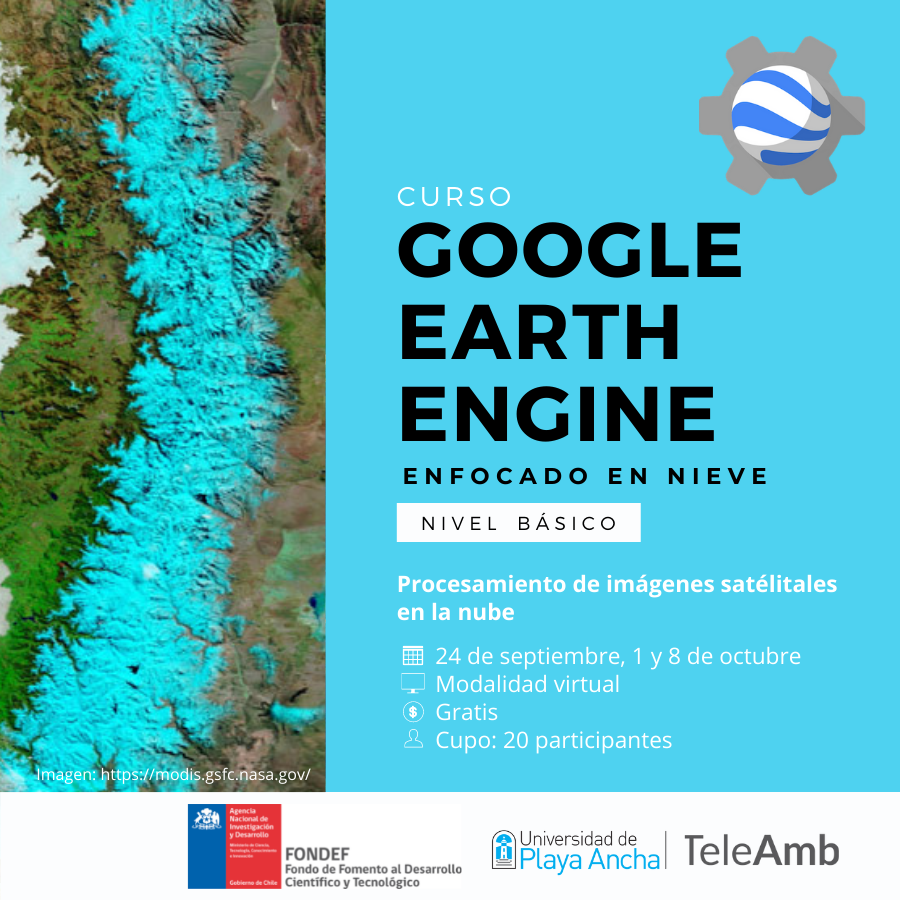

Eventos de Divulgación
El observatorio propone una serie de actividades de divulgación para difundir los resultados y alcances del proyecto.
Seminarios
Seminario Inaugural: Monitoreo Satelital de Nieves en el Contexto del Cambio Climático desarrollado el día 24 de noviembre de 2020
Esta actividad tuvo como objetivo dar a conocer el contexto y los objetivos del proyecto FONDEF ID20i10058 “Observatorio Satelital de Nieves” de la Universidad de Playa Ancha. Cuyas temáticas buscaban dar a conocer la importancia que tiene la nieve en la respuesta hidrológica de las cuencas, el impacto que tendrá el cambio climático y las tendencias esperadas para la zona central de chile y la importancia que tiene en este contexto el monitoreo de nieves y como el proyecto contribuirá a ello.
En complemento a lo señalado, la presente actividad estuvo integrada por 5 expositores:
| Nombre expositor | Ponencia |
|---|---|
| Dra. Stephanie Kampf. Profesora del Departamento de Ciencias Ecosistémicas y Sostenibilidad de la Universidad Estatal de Colorado, EE.UU (Colorado State University). | "Respuesta hidrológica en cuencas dominadas por nieve". |
| Dr. Sebastián Crespo. Profesor asociado del Instituto de Geografía, miembro del Centro de Acción Climática de la PUCV y director del Laboratorio de Territorios Hidrosociales y Cambio Climático de la PUCV y también investigador del CR2. | "Aportes hídricos de la nieve y ambientes glaciales y periglaciales en los Andes Centrales". |
| Dr. Raúl Cordero. Profesor asociado de la Universidad de Santiago, tiene gran experiencia en temas atmosféricos como climatología ultravioleta, mediciones de radiación en tierra, aseguramiento de la calidad de las mediciones de radiación solar y teledetección. | "Tendencias en las próximas décadas de precipitaciones y temperaturas en Chile central". |
| Dr. Freddy Saavedra. Profesor asociado en el Departamento de Ciencias Geográficas de la Universidad de Playa Ancha, sus investigaciones abordan el uso de herramientas de teledetección para el monitoreo ambiental en fenómenos como cobertura nival, vegetación e incendios forestales. Investigador principal del Laboratorio de Teledetección y Monitoreo Ambiental (TeleAmb) y del Proyecto FONDEF ID20i10058. | "Tendencias de nieves en la cuenca del Aconcagua desde imágenes satelitales". |
| Mg. Carlos Romero. Profesor asociado en el Departamento de Ciencias Geográficas de la Universidad de Playa Ancha, especialista en Geomorfología y en el manejo de Tecnologías de Información Geográficas. Investigador principal del Laboratorio de Teledetección y Monitoreo Ambiental (TeleAmb). Director del Proyecto FONDEF ID20i10058. | "Observatorio satelital de nieves". |
El seminario tuvo una duración de 2 horas 30 minutos y una asistencia máxima de 73 espectadores en tiempo real y a la fecha cuenta con más de 360 vistas en la plataforma YouTube. La versión completa del seminario puede ser consultada en el siguiente link: https://youtu.be/c0gQofRHoxg?t=1137
Participación en eventos de difusión
Charla de Difusión Científica Copernicus Chile
El Centro de Referencia (Copernicus Relay) provee coordinación y difusión a nivel nacional, información y ayuda respecto a los recursos del programa Copernicus de la Unión Europea para Chile. En el evento realizado el 10 de mayo de 2021, conducido por el Dr. Florencio Utreras tuvo como invitado al Dr. Freddy Saavedra quien presentó los avances del Proyecto FONDEF 2020: Observatorio Satelital de Nieves, plataforma online para descargar información histórica y actual de la cobertura de nieve. En dicha plataforma se proveerá información de los satélites MODIS, Landsat y Sentinel, aplicando algoritmos de reducción de nubes, para proveer a la comunidad científica y a distintos usuarios un producto mejorado sobre la cobertura de nieve en Chile y en un futuro para todos los Andes.
Participación en Capacitación Gestión del Riesgo
En el marco de una serie de capacitaciones de Gestión del Riesgo organizadas por el Ministerio de Vivienda y Urbanismo, se participó en una jornada el día jueves 29 de julio presentando el Director del proyecto Carlos Romero los avances del Proyecto del Observatorio Satelital de Nieves. En dicho evento, también participaron Carolina Martínez, Felipe Droguett y Alexis Bravo.

Cursos
El equipo del proyecto comprometió una serie de cursos orientados a la comunidad científica y público en general que se ofertarán en distintos periodo del proyecto:
Curso Google Earth Engine - Nivel Básico
Como parte del fortalecimiento de TeleAmb, se elaboró un curso básico de capacitación a la plataforma de programación Google Earth Engine en modalidad virtual para los asociados del proyecto FONDEF. Este curso tiene como objetivo conocer y aprender a utilizar la plataforma de Google Earth Engine (GEE) y su potencial uso en el procesamiento de datos satelitales y monitoreo de la cobertura de nieve mediante la programación JavaScript.
En esta primera parte de elaboración del curso se diseñan y establecen los contenidos para los 3 módulos:
| Temario | Contenidos |
|---|---|
| Unidad 1. Introducción a Google Earth Engine |
|
| Unidad 2. Procesamiento de datos en GEE |
|
| Unidad 3. Elaboración de productos para la detección de nieves |
|
Una mayor variedad de cursos asociados a la teledetección se pueden encontrar en la página de teleamb.cl

Curso Google Earth Engine - Enfocado en Nieve